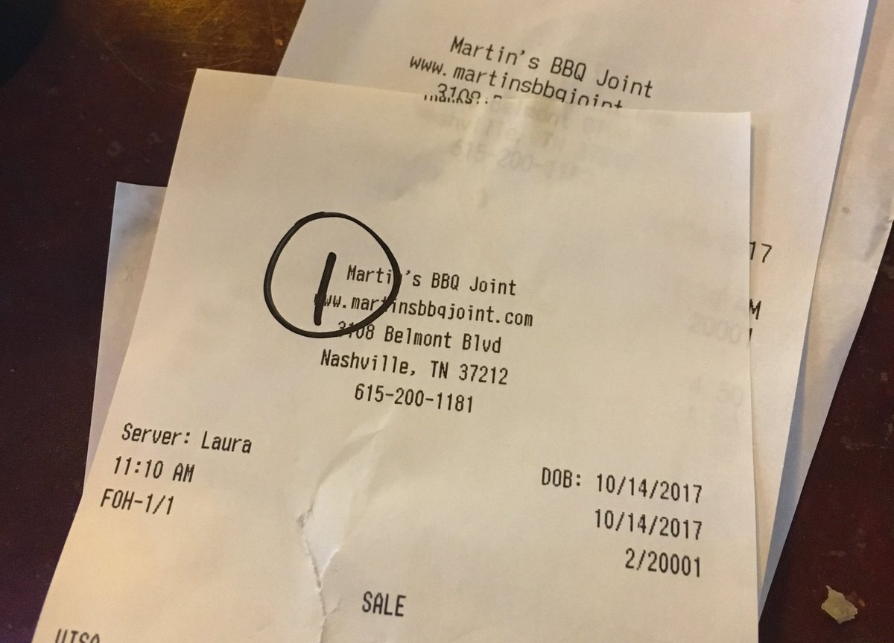

  	<div class="flex-wrap">
      
  	  <article class="tweet  " id="main">
  	    <p class="full_text">
  	      First! @martinsbbq <div class="gallery"><ul><li><a href="../../tweets_media/919244931058855938-DMHP4COW4AAlE7y.jpg"></a></li></ul></div>
  	    </p>
  	    <p class="created_at">
  	      10/14/2017, 9:54:04 AM
  	    </p>
  	    <p class="favorite_count">Favs: 1</p>
  	    <p class="retweet_count">Retweets: 0</p>
  	    <a class="permalink" href="../919244931058855938">link</a>
  	  </article>

  	</div>
  </div>
